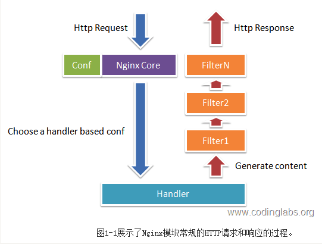
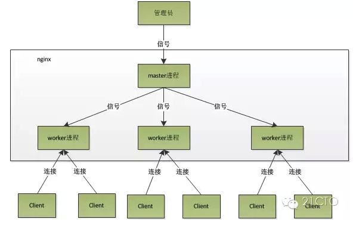
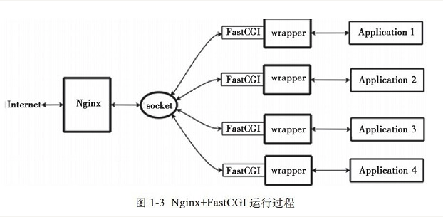

Nginx由内核和模块组成，其中，内核的设计非常微小和简洁，完成的工作也非常简单，仅仅通过查找配置文件将客户端请求映射到一个location block（location是Nginx配置中的一个指令，用于URL匹配），而在这个location中所配置的每个指令将会启动不同的模块去完成相应的工作。
Nginx的模块从结构上分为核心模块、基础模块和第三方模块：
核心模块：HTTP模块、EVENT模块和MAIL模块
基础模块：HTTP Access模块、HTTP FastCGI模块、HTTP Proxy模块和HTTP Rewrite模块，
第三方模块：HTTP Upstream Request Hash模块、Notice模块和HTTP Access Key模块。Nginx的模块从功能上分为如下三类。
Handlers（处理器模块）。此类模块直接处理请求，并进行输出内容和修改headers信息等操作。Handlers处理器模块一般只能有一个。
Filters （过滤器模块）。此类模块主要对其他处理器模块输出的内容进行修改操作，最后由Nginx输出。
Proxies （代理类模块）。此类模块是Nginx的HTTP Upstream之类的模块，这些模块主要与后端一些服务比如FastCGI等进行交互，实现服务代理和负载均衡等功能。
下图展示了Nginx模块常规的HTTP请求和响应的过程。

Nginx在启动后，会有一个master进程和多个worker进程，每个worker里面只有一个主线程。
主要用来管理worker进程，不做任何请求处理工作。master进程杀死后，worker进程仍然可以正常处理请求。master进程功能包含：接收来自外界的信号，向各worker进程发送信号，监控worker进程的运行状态，当worker进程退出后(异常情况下)，会自动重新启动新的worker进程。
master进程充当整个进程组与用户的交互接口，同时对进程进行监护。它不需要处理网络事件，不负责业务的执行，只会通过管理worker进程来实现重启服务、平滑升级、更换日志文件、配置文件实时生效等功能。
我们要控制nginx，只需要通过kill向master进程发送信号就行了。比如kill -HUP pid，则是告诉nginx，从容地重启nginx，我们一般用这个信号来重启nginx，或重新加载配置，因为是从容地重启，因此服务是不中断的。master进程在接收到HUP信号后是怎么做的呢？首先master进程在接到信号后，会先重新加载配置文件，然后再启动新的worker进程，并向所有老的worker进程发送信号，告诉他们可以光荣退休了。新的worker在启动后，就开始接收新的请求，而老的worker在收到来自master的信号后，就不再接收新的请求，并且在当前进程中的所有未处理完的请求处理完成后，再退出。当然，直接给master进程发送信号，这是比较老的操作方式，nginx在0.8版本之后，引入了一系列命令行参数，来方便我们管理。比如，./nginx -s reload，就是来重启nginx，./nginx -s stop，就是来停止nginx的运行。如何做到的呢？我们还是拿reload来说，我们看到，执行命令时，我们是启动一个新的nginx进程，而新的nginx进程在解析到reload参数后，就知道我们的目的是控制nginx来重新加载配置文件了，它会向master进程发送信号，然后接下来的动作，就和我们直接向master进程发送信号一样了。
而基本的网络事件，则是放在worker进程中来处理了。多个worker进程之间是对等的，他们同等竞争来自客户端的请求，各进程互相之间是独立的。一个请求，只可能在一个worker进程中处理，一个worker进程，不可能处理其它进程的请求。worker进程的个数是可以设置的，一般我们会设置与机器cpu核数一致，这里面的原因与nginx的进程模型以及事件处理模型是分不开的。
worker进程之间是平等的，每个进程，处理请求的机会也是一样的。当我们提供80端口的http服务时，一个连接请求过来，每个进程都有可能处理这个连接，怎么做到的呢？首先，每个worker进程都是从master进程fork过来，在master进程里面，先建立好需要listen的socket（listenfd）之后，然后再fork出多个worker进程。所有worker进程的listenfd会在新连接到来时变得可读，为保证只有一个进程处理该连接，所有worker进程在注册listenfd读事件前抢accept_mutex，抢到互斥锁的那个进程注册listenfd读事件，在读事件里调用accept接受该连接。当一个worker进程在accept这个连接之后，就开始读取请求，解析请求，处理请求，产生数据后，再返回给客户端，最后才断开连接，这样一个完整的请求就是这样的了。我们可以看到，一个请求，完全由worker进程来处理，而且只在一个worker进程中处理。
nginx的进程模型，可以由下图来表示：

当一个连接进入，会产生惊群现象。
一般来说，当一个连接进来后，所有在accept在这个socket上面的进程，都会收到通知，而只有一个进程可以accept这个连接，其它的则accept失败，因此就会产生惊群现象。
Nginx对惊群现象的处理：
nginx提供了一个accept_mutex这个东西，这是一个加在accept上的一把共享锁。有了这把锁之后，同一时刻，就只会有一个进程在accpet连接，这样就不会有惊群问题了
accept_mutex = on时，多个Worker将以串行方式来处理，其中有一个Worker会被唤醒，其他的Worker继续保持休眠状态；如果accept_mutex=off，那么所有的Worker都会被唤醒，不过只有一个Worker能获取新连接。
但一般将accept_mutex设置为off就可以。如果关闭了它，可能会引起一定程度的惊群问题，表现为上下文切换增多（sar -w）或者负载上升，但是如果你的网站访问量比较大，为了系统的吞吐量，我还是建议大家关闭它。也就是量少时就算惊群也不会有太大性能问题，量大时惊群更有利于性能。 accept_mutex 默认是off。
events
{
use epoll;
worker_connections 51200;
multi_accept off;
accept_mutex off;
}以php的fastcgi进程管理器php-fpm为例：
FastCGI是一个可伸缩地、高速地在HTTP server和动态脚本语言间通信的接口。多数流行的HTTP server都支持FastCGI，包括Apache、Nginx和lighttpd等。同时，FastCGI也被许多脚本语言支持，其中就有PHP。
FastCGI是从CGI发展改进而来的。传统CGI接口方式的主要缺点是性能很差，因为每次HTTP服务器遇到动态程序时都需要重新启动脚本解析器来执行解析，然后将结果返回给HTTP服务器。这在处理高并发访问时几乎是不可用的。另外传统的CGI接口方式安全性也很差，现在已经很少使用了。
FastCGI接口方式采用C/S结构，可以将HTTP服务器和脚本解析服务器分开，同时在脚本解析服务器上启动一个或者多个脚本解析守护进程。当HTTP服务器每次遇到动态程序时，可以将其直接交付给FastCGI进程来执行，然后将得到的结果返回给浏览器。这种方式可以让HTTP服务器专一地处理静态请求或者将动态脚本服务器的结果返回给客户端，这在很大程度上提高了整个应用系统的性能。
Nginx不支持对外部程序的直接调用或者解析，所有的外部程序（包括PHP）必须通过FastCGI接口来调用。FastCGI接口在Linux下是socket（这个socket可以是文件socket，也可以是ip socket）。
wrapper：为了调用CGI程序，还需要一个FastCGI的wrapper（wrapper可以理解为用于启动另一个程序的程序），这个wrapper绑定在某个固定socket上，如端口或者文件socket。当Nginx将CGI请求发送给这个socket的时候，通过FastCGI接口，wrapper接收到请求，然后Fork(派生）出一个新的线程，这个线程调用解释器或者外部程序处理脚本并读取返回数据；接着，wrapper再将返回的数据通过FastCGI接口，沿着固定的socket传递给Nginx；最后，Nginx将返回的数据（html页面或者图片）发送给客户端。这就是Nginx+FastCGI的整个运作过程，如图所示。

所以，我们首先需要一个wrapper，这个wrapper需要完成的工作：
通过调用fastcgi（库）的函数通过socket和ningx通信（读写socket是fastcgi内部实现的功能，对wrapper是非透明的）
调度thread，进行fork和kill
和application（php）进行通信
FastCGI接口方式在脚本解析服务器上启动一个或者多个守护进程对动态脚本进行解析，这些进程就是FastCGI进程管理器，或者称为FastCGI引擎。 spawn-fcgi与PHP-FPM就是支持PHP的两个FastCGI进程管理器。因此HTTPServer完全解放出来，可以更好地进行响应和并发处理。
Nginx是个轻量级的HTTP server，必须借助第三方的FastCGI处理器才可以对PHP进行解析，因此其实这样看来nginx是非常灵活的，它可以和任何第三方提供解析的处理器实现连接从而实现对PHP的解析(在nginx.conf中很容易设置)。现在主要用PHP的FastCGI处理器PHP-FPM，它有如下优点：
由于它是作为PHP的patch补丁来开发的，安装的时候需要和php源码一起编译，也就是说编译到php core中了，因此在性能方面要优秀一些；
同时它在处理高并发方面也优于spawn-fcgi，至少不会自动重启fastcgi处理器。因此，推荐使用Nginx+PHP/PHP-FPM这个组合对PHP进行解析。
相对Spawn-FCGI，PHP-FPM在CPU和内存方面的控制都更胜一筹，而且前者很容易崩溃，必须用crontab进行监控，而PHP-FPM则没有这种烦恼。 FastCGI 的主要优点是把动态语言和HTTP Server分离开来，所以Nginx与PHP/PHP-FPM经常被部署在不同的服务器上，以分担前端Nginx服务器的压力，使Nginx专一处理静态请求和转发动态请求，而PHP/PHP-FPM服务器专一解析PHP动态请求。
PHP-FPM是管理FastCGI的一个管理器，它作为PHP的插件存在，在安装PHP要想使用PHP-FPM时在老php的老版本（php5.3.3之前）就需要把PHP-FPM以补丁的形式安装到PHP中，而且PHP要与PHP-FPM版本一致，这是必须的）
PHP-FPM其实是PHP源代码的一个补丁，旨在将FastCGI进程管理整合进PHP包中。必须将它patch到你的PHP源代码中，在编译安装PHP后才可以使用。PHP5.3.3已经集成php-fpm了，不再是第三方的包了。PHP-FPM提供了更好的PHP进程管理方式，可以有效控制内存和进程、可以平滑重载PHP配置，比spawn-fcgi具有更多优点，所以被PHP官方收录了。在./configure的时候带 –enable-fpm参数即可开启PHP-FPM。
fastcgi已经在php5.3.5的core中了，不必在configure时添加 --enable-fastcgi了。老版本如php5.2的需要加此项。
当我们安装Nginx和PHP-FPM完后，配置信息：
PHP-FPM的默认配置php-fpm.conf：
# 表示php的fastcgi进程监听的ip地址以及端口，可以监听unix socket，性能更好。
listen = 127.0.0.1:9000
# listen = /tmp/php-cgi.sock
listen.backlog = -1
listen.allowed_clients = 127.0.0.1
listen.owner = www
listen.group = www
listen.mode = 0666
user = www
group = www
pm = dynamic
pm.max_children = 4
pm.start_servers = 2
pm.min_spare_servers = 2
pm.max_spare_servers = 4
pm.max_requests = 1024
pm.process_idle_timeout = 10s
request_terminate_timeout = 100
request_slowlog_timeout = 1
slowlog = /alidata/log/php-slow.logNginx配置运行php： 编辑nginx.conf加入如下语句：
location ~ [^/]\.php(/|$)
{
try_files $uri =404;
# 指定了fastcgi进程侦听的端口,nginx就是通过这里与php交互的
fastcgi_pass 127.0.0.1:9000;
# fastcgi_pass unix:/tmp/php-cgi.sock;
fastcgi_index index.php;
fastcgi_param SCRIPT_FILENAME $document_root$fastcgi_script_name;
}Nginx通过location指令，将所有以php为后缀的文件都交给127.0.0.1:9000来处理，而这里的IP地址和端口就是FastCGI进程监听的IP地址和端口。
1)、FastCGI进程管理器php-fpm自身初始化，启动主进程php-fpm和启动start_servers个CGI 子进程。
主进程php-fpm主要是管理fastcgi子进程，监听9000端口。fastcgi子进程等待来自Web Server的连接。
2)、当客户端请求到达Web Server Nginx是时，Nginx通过location指令，将所有以php为后缀的文件都交给127.0.0.1:9000来处理，即Nginx通过location指令，将所有以php为后缀的文件都交给127.0.0.1:9000来处理。
3）FastCGI进程管理器PHP-FPM选择并连接到一个子进程CGI解释器。Web server将CGI环境变量和标准输入发送到FastCGI子进程。
4)、FastCGI子进程完成处理后将标准输出和错误信息从同一连接返回Web Server。当FastCGI子进程关闭连接时，请求便告处理完成。
5)、FastCGI子进程接着等待并处理来自FastCGI进程管理器（运行在 WebServer中）的下一个连接。